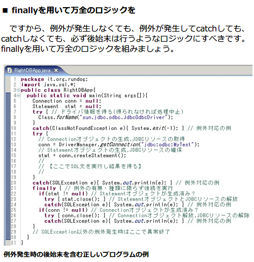
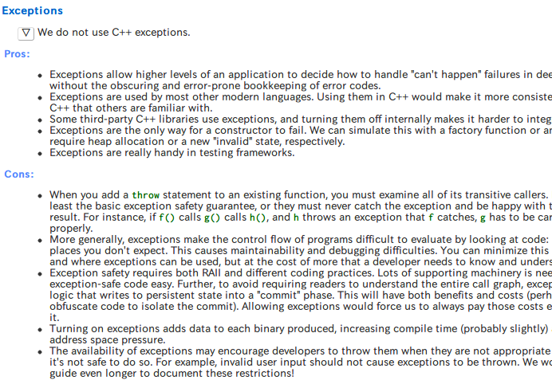

エラー処理の抽象化
田中英行 <tanaka.hideyuki@gmail.com>
2012/06/26 @LOG.debug("nice catch!")
田中英行 <tanaka.hideyuki@gmail.com>
2012/06/26 @LOG.debug("nice catch!")
Github: https://github.com/tanakh
Haskell入門書 すごいHaskellたのしく学ぼう!
とんでもないところに来てしまったぞ (((´･_･`))) ﾌﾞﾙﾌﾞﾙ

あわせて読みたい：エラー処理を書いてはいけない
時々刻々と発生し続けるエラーに華麗に対処しつつ、 何事もなかったかのように動き続ける 堅牢なソフトウェアを作るための処理。
※ そういうソフトウェアである必要がなければ、 必ずしもきちんとやる必要はない
単機能のコマンドラインツール
プログラムに おかしなものは 憑き物だ
ハードウェア由来
不正な引数
呼び出し先の問題
単なるバグ
エラー処理は面倒
エラー処理は難しい
面倒…難しい……！？
そうだね、抽象化だね。
Don't repeat yourself
エラー処理には次の2つが必要。
エラーの通知
エラーの受信
int foo(...)
{
int fd = open(...);
if (fd < 0) return -1;
int fe = open(...);
if (fe < 0) {
close(fd);
return -1;
}
int ff = open(...);
if (ff < 0) {
close(fe);
close(fd);
return -1;
}
...
}int foo(...)
{
int fd = open(...);
if (fd < 0) return -1; // <- エラー処理
int fe = open(...);
if (fe < 0) { // <- エラー処理
close(fd); // <- エラー処理
return -1; // <- エラー処理
} // <- エラー処理
int ff = open(...);
if (ff < 0) { // <- エラー処理
close(fe); // <- エラー処理
close(fd); // <- エラー処理
return -1; // <- エラー処理
} // <- エラー処理
...
}利点
欠点
エラーの情報を渡しにくい
欠点（続き）
＿人人人 人人人＿
＞ 突然のGoto論争 ＜
￣Y^Y^Y^Y^Y^Y^Y￣ class Main {
public static void main (String[] args) {
try {
int x = 1/0;
...
} catch (ArithmeticException e) {
// error handling...
...
}
}
}利点
欠点

意外とセンスが問われる！
例外を使おうよ社内勉強会やったり
プログラミング環境からくる制約もある
例えば、C言語には例外のための十分な言語機能がない
例外が使えたとしても、利用したいソフトウェア・ライブラリが 例外安全じゃないなど
推奨するエラー通知手段を扱いやすく言語を設計する
割りと影響力のあるGoogle C++スタイルガイドが 例外を禁止している

例外を用いた正しいコードを書くのは大変。
守るべきガイドラインを、例外安全性としてまとめた
詳しくはこちら → http://togetter.com/li/227690
死ぬほどむずい！
stack::pop() が値を返せない問題
Exceptional C++ (ハーブ サッター)に詳しい
その他、C++の罠がたくさん載っている楽しい本
一般に、スタックのpopを例外安全に書けないという話ではない
あくまで、C++のセマンティクスで、STLの標準ライブラリの仕様を満たしつつ、 強い例外安全 が実現できないという話
(cf. java.util.Stack<E>)
エラー処理の抽象化を可能とするための道具
じゃあどうすればいいの (´･_･`)…？
エラーを投げる → コンテクストに応じたエラーに変化
そんな事出来るんですか (´･_･`)？
エラーの受信に係るコードの抽象化
エラーコード、例外、その他もろもろ統一的に扱えるポリモーフィックなハンドラ
重要なのは Composability (組み合わせ可能性)
組み合わせ可能な、抽象化されたエラーハンドラ
必要なビルディングブロック
エラーの送出
エラーの伝搬
bracket (a.k.a dynamic-wind @scheme)
ビルティングブロックの組み合わせは、いろいろ考えられる
では、お見せしましょう。
モナドを使えば出来るよ！
フレームワークがビルティングブロックを定義
各エラー方式でそれを実装
あとは組み合わせ自由自在
class (Monad m) => MonadError e m | m -> e where
-- | Is used within a monadic computation to begin exception processing.
throwError :: e -> m a
{- |
A handler function to handle previous errors and return to normal execution.
A common idiom is:
> do { action1; action2; action3 } `catchError` handler
where the @action@ functions can call 'throwError'.
Note that @handler@ and the do-block must have the same return type.
-}
catchError :: m a -> (e -> m a) -> m a（throwErrorとcatchErrorという関数が定義されている）
IO例外を扱えるようにする
instance MonadError IOException IO where
throwError = ioError
catchError = catchEitherを扱えるようにする
instance Error e => MonadError e (Either e) where
throwError = Left
Left l `catchError` h = h l
Right r `catchError` _ = Right r
instance (Monad m, Error e) => MonadError e (ErrorT e m) where
throwError = ErrorT.throwError
catchError = ErrorT.catchErrorghci> throwError "hoge" :: Either String ()
Left "hoge"
ghci> throwError "hoge" :: Maybe ()
Nothingよくあるパターンを抽象化できるようになる
エラー無視
n回試行
a が失敗したら b を実行
これらを組み合わせて、
ign :: MonadError e m => m () -> m ()
ign m = m `catchError` (\e -> return ())受け取ったエラーを無視するだけのコード
tryN :: MonadError e m => Int -> m a -> m a
tryN n m = go n where
go 1 = m
go i = m `catchError` (\e -> go (i-1))失敗したらカウンタを減らして再度実行
or :: MonadError e m => m a -> m a -> m a
or a b = do
a `catchError` (\_ -> b)エラーハンドラでbを実行する
main = ign $ tryN 10 $ do
download "http://xxx/aznn.png" `or`
download "http://xxx/prpr.png"あんなコードやこんなコードも自由自在！
エラー処理とリソース管理は切っても切れない関係
リソース管理の抽象化も必要
排他処理、ロックなど慎重を極める
非同期例外
mask :: ((forall a. IO a -> IO a) -> IO b) -> IO b使用例：
mask $ \restore -> do
x <- acquire
restore (do_something_with x) `onException` release
release引数の処理は非同期例外がマスクされる。 ただし、引数（ここではrestore）を用いれば、 マスクを解除できる。
これまでの抽象化は、高階関数ベースの話
OO言語では、どういう風に抽象化すればうまくいくのか解らない
皆様是非（Javaで！）考えてみてください！
エラー処理は抽象化できる
エラー処理を抽象化すると